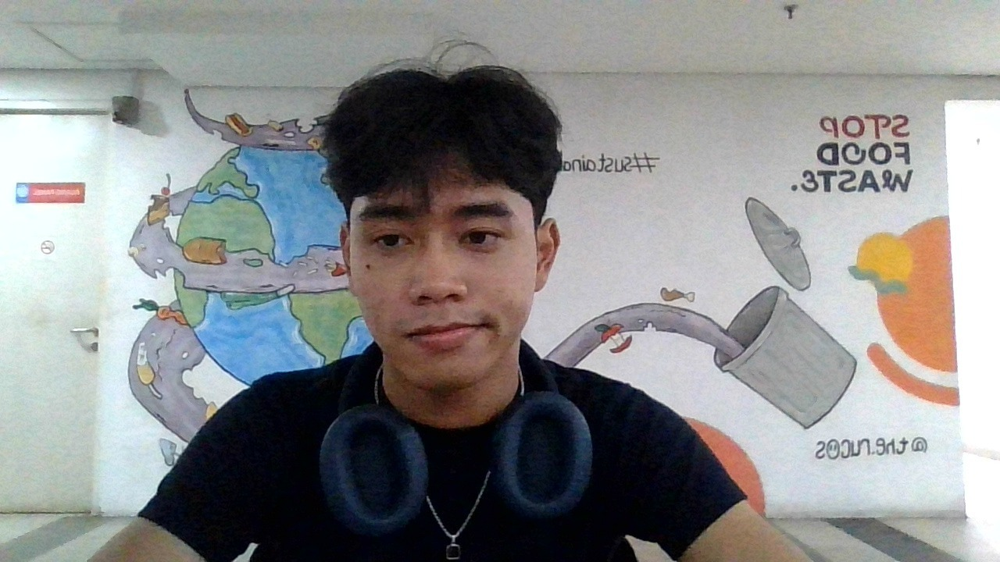

NIM: 2025081049
Nama: Ahmad Zidan
Agama: Islam
Tanggal Lahir: 11 November 2005
Tempat Lahir: Tangerang
SDIT DARUL QURAN MULIA
MTS SWASTA IBNU TAIMIYAH
MA SWASTA IBNU TAIMIYAH
S1 - Sarjana Komputer
S2 - Magister Manajemen Sistem Informasi
PENGALAMAN ORGANISASI HIMPUNAN MAHASISWA SISTEM INFORMASI (HIMASIF UPJ) Anggota Divisi Riset dan Akademik
PENGALAMAN KEPANITIAAN • CONCORDIA TAMARATIVE 2025 Anggota Divisi Perlengkapan/Sarana dan Prasarana • SISTEM INFORMASI BUKA PUASA BERSAMA (SIFTAR) 2025 Ketua Pelaksana • PRIMA UPJ 2026 Anggota Divisi Mentor • HIMASIF COMPANY VISIT 2026 Koordinator Divisi Akomodasi
WEB DEVELOPMENT.
KOMUNIKASI.
CEPAT BERADAPTASI.
KERJASAMA TIM.
MANAJEMEN LOGISTIK.
Daftar jurnal dan publikasi ilmiah.